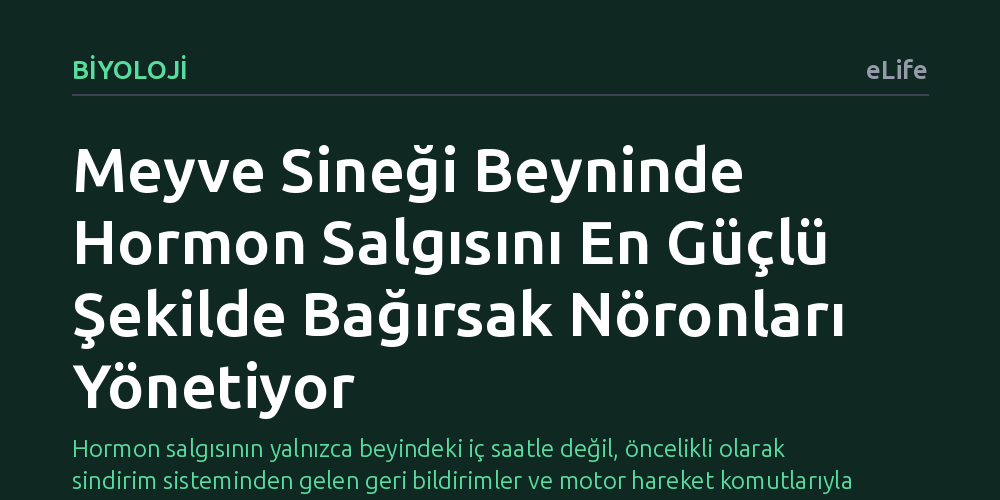

BIYOLOJI · eLife · 2026-10-19
Araştırmacılar meyve sineği beyninde hormon salgılayan hücrelerin bağlantı haritasını çıkararak duyusal sinyallerin hormonları nasıl kontrol ettiğini inceledi. İnceleme sonucunda, bu hormon hücrelerini en güçlü etkileyen kaynağın bağırsak sinirleri olduğu ve sistemin hareketi yöneten merkezlerle sıkı bağlar kurduğu saptandı.
Hormon salgısının yalnızca beyindeki iç saatle değil, öncelikli olarak sindirim sisteminden gelen geri bildirimler ve motor hareket komutlarıyla eşgüdümlü çalıştığını gösteriyor.

Hormonlar; uyku, uyanıklık, beslenme, büyüme, metabolizma ve üreme gibi hayati süreçleri koordine eden temel kimyasal habercilerdir. Böceklerde ve diğer pek çok canlıda beynin özelleşmiş merkezleri, çeşitli peptit hormonlarını üreten ve dolaşıma salan nörosalgı hücrelerine ev sahipliği yapar. Ancak bu komuta merkezinin dış dünyadan gelen duyusal sinyalleri nasıl topladığı, hangi uyaranların hangi hormonları doğrudan tetiklediği ve bu iletişimin hangi sinir yolları üzerinden gerçekleştiği ayrıntılı olarak bilinmiyordu.
Bir canlının hayatta kalabilmesi için çevresindeki değişimlere uygun fizyolojik ve davranışsal tepkileri eşzamanlı olarak vermesi gerekir. Örneğin besin bulan bir hayvanın sadece yeme eylemini başlatması yetmez; sindirim sisteminin uyarılması, enerji depolama mekanizmalarının devreye girmesi ve üreme gibi diğer faaliyetlerin buna göre ayarlanması zorunludur. Bilim insanları, bu karmaşık orkestrasyonun meyve sineği beyninde somut olarak hangi sinaptik bağlantılarla sağlandığını ortaya çıkarmak amacıyla yola çıktı.
Araştırmacılar, yetişkin meyve sineğinin (Drosophila) tüm beynini kapsayan yüksek çözünürlüklü konnektom veri setini inceledi. Bu devasa sinir haritasında, hormon üreten nörosalgı hücrelerinin dendritleri ve sinapsları tek tek taranarak hücrelerin hangi nöronlardan girdi aldığı ve hangi hedeflere çıktı gönderdiği eksiksiz biçimde haritalandırıldı.
Bağlantıların yalnızca anatomik varlığını tespit etmekle yetinmeyen ekip, sinyallerin sinir ağındaki gücünü ve yayılımını ölçmek için doğrusal dinamik sistemlere dayanan matematiksel bir etki metriği kullandı. Haritalanan devrelerin işlevsel doğrulaması için tek hücre RNA dizileme verileri incelenerek hücreler arasındaki parakrin etkileşimler değerlendirildi; ayrıca belirlenen nöronların canlı sineklerdeki rolü yumurtlama davranış testleriyle doğrudan sınandı.
Elde edilen harita, duyu organları ile hormon merkezleri arasında beklenmedik bir hiyerarşi olduğunu gösterdi. Hormon üreten hücrelerin uzantıları birincil tat merkezi olan bölgeye kadar ulaşmasına rağmen, çevresel tat nöronlarından gelen bağlantıların doğrudan değil, büyük ölçüde aracı nöronlar üzerinden dolaylı aktarıldığı görüldü. Koku duyusuna ait sinyallerin de benzer şekilde özelleşmiş istasyonlar üzerinden hormon hücrelerine ulaştığı tespit edildi.
Çalışmanın en dikkat çekici bulgusu, sindirim sisteminden gelen sinyallerin gücü oldu. Matematiksel etki analizi, hormon salgılayan hücreleri en kuvvetli şekilde etkileyen kaynağın dış duyular değil, doğrudan bağırsak kaynaklı (enterik) nöronlar olduğunu ortaya koydu. Ayrıca "diüretik hormon 44" üreten hücrelerin birçok hormon grubuna girdi sağlayan merkezi bir koordinatör gibi çalıştığı, "corazonin" salgılayan hücrelerin ise DNg27 adlı motor nöron üzerinden yumurtlama davranışını doğrudan etkilediği belirlendi.
Analizler, beyinden vücudun motor merkezlerine inen nöronların hormon hücrelerine de yoğun girdiler sağladığını gösterdi. Bu durum, beynin bir motor davranışı başlatırken aynı anda endokrin sistemi de uyararak bedenin fizyolojik durumunu yapılacak hareketle eşzamanlı olarak güncellediğini düşündürüyor. Buna karşılık, hormon hücrelerinden gelen sinaptik çıktının oldukça sınırlı kalması, bu hücrelerin çevreye doğrudan sinapsla değil, geniş alana yayılan peptit salgısıyla komut verdiğini doğruluyor.
Meyve sineğinde hücresel düzeyde tamamlanan bu haritalama, bağırsak ile beyin arasındaki doğrudan eksenin hormon dengesini yönetmedeki kritik rolünü açıkça gözler önüne seriyor. Bulgular, metabolizma ve beslenme bozukluklarının altında yatan sinirsel mekanizmaların anlaşılmasına katkı sağlarken, daha karmaşık omurgalı canlılardaki nöroendokrin ağların incelenmesi için de güçlü bir kavramsal zemin hazırlıyor.